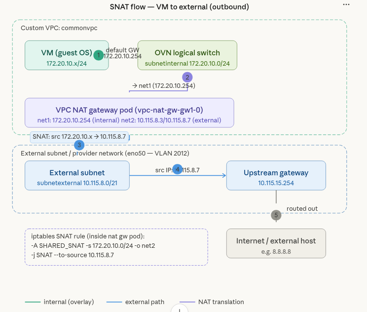
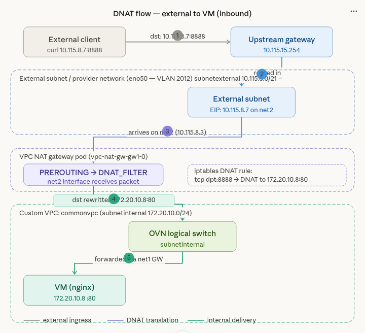

|
This is unreleased documentation for SUSE® Virtualization v1.9 (Dev). |
VPC NAT Gateway
|
All features that use Kube-OVN are considered experimental. For more information about experimental features, see Feature Labels. |
Kube-OVN supports network address translation (NAT) via Kubernetes custom resource definitions (CRDs), not just IP tables directly. For example, resources such as OvnEip, OvnSnatRule, and OvnDnatRule (or their iptables-based equivalents) are used to define NAT behavior declaratively.
In SUSE Virtualization, virtual machine orchestration (compute, storage, virtual machine lifecycle, L2 VLAN-based networking, and underlay networking) is handled by SUSE Virtualization. Overlay networking (including routing, NAT, subnets, and VPC) is handled by Kube-OVN. This separation allows for more scalable, flexible, and clean networking.
NAT provides the following benefits:
-
External connectivity or inbound access
-
Source NAT (SNAT) allows virtual machines and pods in a private overlay network or VPC to access external networks (for example, the internet) by translating their internal source IP to a public (or external network-shared) IP.
-
Destination NAT (DNAT) allows external hosts to access internal virtual machines and pods by mapping a public IP or port to an internal private IP or port. This is useful when you want to access an internal virtual machine via SSH.
-
-
Flexible networking for VPCs and overlay networks
When using SNAT or DNAT with Kube-OVN, you can build isolated private subnets and VPCs while still allowing controlled egress (outbound) or ingress (inbound) traffic. This is especially relevant for virtual machine workloads managed by SUSE Virtualization, which may require virtual machines to access the internet or to expose services externally.
Kube-OVN as secondary CNI
In SUSE Virtualization v1.6.x and v1.7.x, outbound and inbound connectivity for virtual machines works only when they are attached to subnets created on a default VPC (ovn-cluster) with the natOutgoing setting set to true.
With the introduction of Kube-OVN as the secondary CNI in SUSE Virtualization v1.8.0, outbound and inbound connectivity for virtual machines also works on subnets created on custom VPCs using the VPC NAT gateway functionality.
Sample configuration
Creating a network attachment definition (tenant or internal network)
apiVersion: k8s.cni.cncf.io/v1
kind: NetworkAttachmentDefinition
metadata:
labels:
network.harvesterhci.io/ready: "true"
network.harvesterhci.io/type: OverlayNetwork
name: vswitchinternal
namespace: default
spec:
config: '{"cniVersion":"0.3.1","name":"vswitchinternal","type":"kube-ovn","server_socket":
"/run/openvswitch/kube-ovn-daemon.sock", "provider": "vswitchinternal.default.ovn"}'Creating a network attachment definition (external network)
kubectl get net-attach-def vswitchexternal1 -o yaml
apiVersion: k8s.cni.cncf.io/v1
kind: NetworkAttachmentDefinition
metadata:
labels:
network.harvesterhci.io/ready: "true"
network.harvesterhci.io/type: OverlayNetwork
name: vswitchexternal
namespace: kube-system
spec:
config: '{"cniVersion":"0.3.1","name":"vswitchexternal","master": "eno50","type":"kube-ovn","server_socket":
"/run/openvswitch/kube-ovn-daemon.sock", "provider": "vswitchexternal.kube-system.ovn"}'Creating a subnet using the internal or tenant network in custom-vpc
apiVersion: kubeovn.io/v1
kind: Subnet
metadata:
name: subnetinternal
spec:
cidrBlock: 172.20.10.0/24
default: false
enableLb: true
excludeIps:
- 172.20.10.1
gateway: 172.20.10.1
gatewayNode: ""
natOutgoing: true
private: false
protocol: IPv4
provider: vswitchinternal.default.ovn
vpc: custom-vpcCreating a subnet using the external network
apiVersion: kubeovn.io/v1
kind: Subnet
metadata:
name: subnetexternal
spec:
cidrBlock: 10.115.48.0/21
default: false
enableLb: true
excludeIps:
- 10.115.55.254
gateway: 10.115.55.254
gatewayNode: ""
natOutgoing: true
private: false
protocol: IPv4
provider: vswitchexternal.kube-system.ovn
vpc: custom-vpcCreating the VPC NAT gateway configuration
kind: VpcNatGateway
apiVersion: kubeovn.io/v1
metadata:
annotations:
k8s.v1.cni.cncf.io/networks: default/vswitchinternal
name: gw1
spec:
vpc: custom-vpc
subnet: subnetinternal
lanIp: 172.20.10.254
externalSubnets:
- subnetexternalVerifying if a new VPC NAT gateway StatefulSet was created
kubectl get statefulset -n kube-system vpc-nat-gw-gw1 -o yaml
apiVersion: apps/v1
kind: StatefulSet
metadata:
creationTimestamp: "2026-03-06T22:33:47Z"
generation: 1
labels:
app: vpc-nat-gw-gw1
ovn.kubernetes.io/vpc-nat-gw: "true"
name: vpc-nat-gw-gw1
namespace: kube-system
resourceVersion: "12139577"
uid: cb48e680-95e8-408d-be47-23499ad0ac5c
spec:
persistentVolumeClaimRetentionPolicy:
whenDeleted: Retain
whenScaled: Retain
podManagementPolicy: OrderedReady
replicas: 1
revisionHistoryLimit: 10
selector:
matchLabels:
app: vpc-nat-gw-gw1
ovn.kubernetes.io/vpc-nat-gw: "true"
serviceName: ""
template:
metadata:
annotations:
externalvswitch.kube-system.ovn.kubernetes.io/routes: '[{"dst":"0.0.0.0/0","gw":"10.115.55.254"}]'
internalvswitch.default.ovn.kubernetes.io/ip_address: 172.20.10.254
internalvswitch.default.ovn.kubernetes.io/logical_switch: internalsubnet
internalvswitch.default.ovn.kubernetes.io/routes: '[{"dst":"10.55.0.0/16","gw":"172.20.10.1"},{"dst":"10.115.48.0/21","gw":"172.20.10.1"}]'
internalvswitch.default.ovn.kubernetes.io/vpc_nat_gw: gw1
k8s.v1.cni.cncf.io/networks: default/internalvswitch, kube-system/externalvswitch
ovn.kubernetes.io/ip_address: 172.20.10.254
ovn.kubernetes.io/logical_switch: internalsubnet
ovn.kubernetes.io/vpc_nat_gw: gw1
labels:
app: vpc-nat-gw-gw1
ovn.kubernetes.io/vpc-nat-gw: "true"
spec:
affinity: {}
containers:
- command:
- sleep
- infinity
env:
- name: GATEWAY_V4
value: 10.115.55.254
- name: GATEWAY_V6
image: docker.io/kubeovn/vpc-nat-gateway:v1.15.0
imagePullPolicy: IfNotPresent
lifecycle:
postStart:
exec:
command:
- sh
- -c
- sysctl -w net.ipv4.ip_forward=1
name: vpc-nat-gw
resources: {}
securityContext:
allowPrivilegeEscalation: true
privileged: true
terminationMessagePath: /dev/termination-log
terminationMessagePolicy: File
dnsPolicy: ClusterFirst
restartPolicy: Always
schedulerName: default-scheduler
securityContext: {}
terminationGracePeriodSeconds: 0
updateStrategy:
type: RollingUpdate
status:
availableReplicas: 1
collisionCount: 0
currentReplicas: 1
currentRevision: vpc-nat-gw-gw1-98ff96d76
observedGeneration: 1
readyReplicas: 1
replicas: 1
updateRevision: vpc-nat-gw-gw1-98ff96d76
updatedReplicas: 1Verifying if a new VPC NAT gateway pod was created
kubectl describe pod vpc-nat-gw-gw1-0 -n kube-system
Name: vpc-nat-gw-gw1-0
Namespace: kube-system
Priority: 0
Service Account: default
Node: hp-46/10.115.14.70
Start Time: Fri, 06 Mar 2026 22:33:47 +0000
Labels: app=vpc-nat-gw-gw1
apps.kubernetes.io/pod-index=0
controller-revision-hash=vpc-nat-gw-gw1-98ff96d76
ovn.kubernetes.io/vpc-nat-gw=true
statefulset.kubernetes.io/pod-name=vpc-nat-gw-gw1-0
Annotations: cni.projectcalico.org/containerID: 3cf564b6124aae048a097bd9777dd3ac583b293357cb819a85146515e2ba1e52
cni.projectcalico.org/podIP: 10.52.1.66/32
cni.projectcalico.org/podIPs: 10.52.1.66/32
externalvswitch.kube-system.ovn.kubernetes.io/allocated: true
externalvswitch.kube-system.ovn.kubernetes.io/cidr: 10.115.48.0/21
externalvswitch.kube-system.ovn.kubernetes.io/gateway: 10.115.55.254
externalvswitch.kube-system.ovn.kubernetes.io/ip_address: 10.115.48.1
externalvswitch.kube-system.ovn.kubernetes.io/logical_router: commonvpc
externalvswitch.kube-system.ovn.kubernetes.io/logical_switch: externalsubnet
externalvswitch.kube-system.ovn.kubernetes.io/mac_address: fe:01:4a:61:43:6e
externalvswitch.kube-system.ovn.kubernetes.io/pod_nic_type: veth-pair
externalvswitch.kube-system.ovn.kubernetes.io/routed: true
externalvswitch.kube-system.ovn.kubernetes.io/routes: [{"dst":"0.0.0.0/0","gw":"10.115.55.254"}]
internalvswitch.default.ovn.kubernetes.io/allocated: true
internalvswitch.default.ovn.kubernetes.io/cidr: 172.20.10.0/24
internalvswitch.default.ovn.kubernetes.io/gateway: 172.20.10.1
internalvswitch.default.ovn.kubernetes.io/ip_address: 172.20.10.254
internalvswitch.default.ovn.kubernetes.io/logical_router: commonvpc
internalvswitch.default.ovn.kubernetes.io/logical_switch: internalsubnet
internalvswitch.default.ovn.kubernetes.io/mac_address: d6:2d:c1:95:45:15
internalvswitch.default.ovn.kubernetes.io/pod_nic_type: veth-pair
internalvswitch.default.ovn.kubernetes.io/routed: true
internalvswitch.default.ovn.kubernetes.io/routes: [{"dst":"10.55.0.0/16","gw":"172.20.10.1"},{"dst":"10.115.48.0/21","gw":"172.20.10.1"}]
internalvswitch.default.ovn.kubernetes.io/vpc_cidrs: ["172.20.10.0/24"]
internalvswitch.default.ovn.kubernetes.io/vpc_nat_gw: gw1
k8s.v1.cni.cncf.io/network-status:
[{
"name": "k8s-pod-network",
"interface": "eth0",
"ips": [
"10.52.1.66"
],
"mac": "be:86:12:cc:e3:30",
"default": true,
"dns": {}
},{
"name": "default/internalvswitch",
"interface": "net1",
"ips": [
"172.20.10.254"
],
"mac": "d6:2d:c1:95:45:15",
"dns": {}
},{
"name": "kube-system/externalvswitch",
"interface": "net2",
"ips": [
"10.115.48.1"
],
"mac": "fe:01:4a:61:43:6e",
"dns": {},
"gateway": [
"10.115.55.254"
]
}]
k8s.v1.cni.cncf.io/networks: default/internalvswitch, kube-system/externalvswitch
ovn.kubernetes.io/ip_address: 172.20.10.254
ovn.kubernetes.io/logical_switch: internalsubnet
ovn.kubernetes.io/vpc_nat_gw: gw1
ovn.kubernetes.io/vpc_nat_gw_init: true
Status: Running
IP: 10.52.1.66
IPs:
IP: 10.52.1.66
Controlled By: StatefulSet/vpc-nat-gw-gw1
Containers:
vpc-nat-gw:
Container ID: containerd://efcab898c60ad94ee5d79a598f96d5b0becf65c2ae917d6f02246b227be40eca
Image: docker.io/kubeovn/vpc-nat-gateway:v1.15.0
Image ID: docker.io/kubeovn/vpc-nat-gateway@sha256:4c090dffaaf5c44593883bfa15a4524e860ac4d7c32555d98284aa8fa042ba6a
Port: <none>
Host Port: <none>
Command:
sleep
infinity
State: Running
Started: Fri, 06 Mar 2026 22:34:01 +0000
Ready: True
Restart Count: 0
Environment:
GATEWAY_V4: 10.115.55.254
GATEWAY_V6:
Mounts:
/var/run/secrets/kubernetes.io/serviceaccount from kube-api-access-qgb7d (ro)
Conditions:
Type Status
PodReadyToStartContainers True
Initialized True
Ready True
ContainersReady True
PodScheduled True
Volumes:
kube-api-access-qgb7d:
Type: Projected (a volume that contains injected data from multiple sources)
TokenExpirationSeconds: 3607
ConfigMapName: kube-root-ca.crt
Optional: false
DownwardAPI: true
QoS Class: BestEffort
Node-Selectors: <none>
Tolerations: node.kubernetes.io/not-ready:NoExecute op=Exists for 300s
node.kubernetes.io/unreachable:NoExecute op=Exists for 300s
Events: <none>Checking the VPC NAT gateway pod for interfaces
In this example, net1 is attached to the internal network, while net2 is attached to the external network.
kubectl exec -it vpc-nat-gw-gw1-0 -n kube-system -- /bin/bash
vpc-nat-gw-gw1-0:/kube-ovn# ip addr show
1: lo: <LOOPBACK,UP,LOWER_UP> mtu 65536 qdisc noqueue state UNKNOWN group default qlen 1000
link/loopback 00:00:00:00:00:00 brd 00:00:00:00:00:00
inet 127.0.0.1/8 scope host lo
valid_lft forever preferred_lft forever
inet6 ::1/128 scope host proto kernel_lo
valid_lft forever preferred_lft forever
2: eth0@if4949: <BROADCAST,MULTICAST,UP,LOWER_UP> mtu 1450 qdisc noqueue state UP group default qlen 1000
link/ether be:86:12:cc:e3:30 brd ff:ff:ff:ff:ff:ff link-netnsid 0
inet 10.52.1.66/32 scope global eth0
valid_lft forever preferred_lft forever
inet6 fe80::bc86:12ff:fecc:e330/64 scope link proto kernel_ll
valid_lft forever preferred_lft forever
4950: net1@if4951: <BROADCAST,MULTICAST,UP,LOWER_UP> mtu 1450 qdisc noqueue state UP group default
link/ether d6:2d:c1:95:45:15 brd ff:ff:ff:ff:ff:ff link-netnsid 0
inet 172.20.10.254/24 brd 172.20.10.255 scope global net1
valid_lft forever preferred_lft forever
inet6 fe80::d42d:c1ff:fe95:4515/64 scope link proto kernel_ll
valid_lft forever preferred_lft forever
4952: net2@if4953: <BROADCAST,MULTICAST,UP,LOWER_UP> mtu 1450 qdisc noqueue state UP group default
link/ether fe:01:4a:61:43:6e brd ff:ff:ff:ff:ff:ff link-netnsid 0
inet 10.115.48.1/21 brd 10.115.55.255 scope global net2
valid_lft forever preferred_lft forever
inet 10.115.55.200/21 scope global secondary net2
valid_lft forever preferred_lft forever
inet6 fe80::fc01:4aff:fe61:436e/64 scope link proto kernel_ll
valid_lft forever preferred_lft forever
vpc-nat-gw-gw1-0:/kube-ovn# ip route show
default via 10.115.55.254 dev net2
10.55.0.0/16 via 172.20.10.1 dev net1
10.115.48.0/21 dev net2 proto kernel scope link src 10.115.48.1
169.254.1.1 dev eth0 scope link
172.20.10.0/24 dev net1 proto kernel scope link src 172.20.10.254Creating a provider network and physical interface
apiVersion: kubeovn.io/v1
kind: ProviderNetwork
metadata:
name: pn1
spec:
defaultInterface: eno50Creating a VLAN network attached to a provider network
apiVersion: kubeovn.io/v1
kind: Vlan
metadata:
name: vlan2017
spec:
id: 2017
provider: pn1Editing a subnet to use a specific VLAN
This attaches the subnet to the provider network underlay.
apiVersion: kubeovn.io/v1
kind: Subnet
metadata:
name: subnetexternal
spec:
cidrBlock: 10.115.48.0/21
default: false
enableLb: true
excludeIps:
- 10.115.55.254
gateway: 10.115.55.254
gatewayNode: ""
natOutgoing: true
private: false
protocol: IPv4
provider: vswitchexternal.kube-system.ovn
vlan: vlan2017
vpc: custom-vpcVerifying the provider network bridge and external subnet attached to the OVS
In this example, the provider network bridge is br-pn1 and the external subnet attached on the OVS is patch-localnet.externalsubnet-to-br-int.
kubectl exec -it ovs-ovn-q92zk -n kube-system -- /bin/bash
Defaulted container "openvswitch" out of: openvswitch, hostpath-init (init)
nobody@hp-65:/kube-ovn$ ovs-vsctl show
54ef5649-9fe6-4944-865b-30a591c95121
Bridge br-pn1
Port br-pn1
Interface br-pn1
type: internal
Port patch-localnet.externalsubnet-to-br-int
Interface patch-localnet.externalsubnet-to-br-int
type: patch
options: {peer=patch-br-int-to-localnet.externalsubnet}
Port eno50
trunks: [0, 2017]
Interface eno50
Bridge br-int
fail_mode: secure
datapath_type: system
Port br-int
Interface br-int
type: internal
Port "6159403e_net1_h"
Interface "6159403e_net1_h"
Port mirror0
Interface mirror0
type: internal
Port ovn0
Interface ovn0
type: internal
Port patch-br-int-to-localnet.externalsubnet
Interface patch-br-int-to-localnet.externalsubnet
type: patch
options: {peer=patch-localnet.externalsubnet-to-br-int}
Port "7e8b0_37a8eec_h"
Interface "7e8b0_37a8eec_h"
Port "6159403e_net2_h"
Interface "6159403e_net2_h"
ovs_version: "3.5.3"SNAT for external connectivity from overlay virtual machines
Creating an elastic IP (EIP) resource
apiVersion: kubeovn.io/v1
kind: IptablesEIP
metadata:
name: my-eip
spec:
natGwDp: gw1 # Name of your VpcNatGateway
externalSubnet: subnetexternal
v4ip: 10.115.55.200 #random public ip from external subnetCreating a SNAT resource
apiVersion: kubeovn.io/v1
kind: IptablesSnatRule
metadata:
name: my-snat
spec:
eip: my-eip
internalCIDR: 172.20.10.0/24 #internal subnet CIDRVerifying the EIP status
kubectl get eip
NAME IP MAC NAT NATGWDP READY
my-eip 10.115.55.200 52:1b:4f:1d:14:ce dnat,snat gw1 trueVerifying the SNAT filter iptable rule
This rule is created inside the VPC NAT gateway pod.
vpc-nat-gw-gw1-0:/kube-ovn# iptables-legacy-save -t nat
# Generated by iptables-save v1.8.11 on Sat Mar 7 00:28:34 2026
*nat
:PREROUTING ACCEPT [2949:373475]
:INPUT ACCEPT [107:31097]
:OUTPUT ACCEPT [0:0]
:POSTROUTING ACCEPT [1:60]
:DNAT_FILTER - [0:0]
:EXCLUSIVE_DNAT - [0:0]
:EXCLUSIVE_SNAT - [0:0]
:SHARED_DNAT - [0:0]
:SHARED_SNAT - [0:0]
:SNAT_FILTER - [0:0]
-A PREROUTING -j DNAT_FILTER
-A POSTROUTING -j SNAT_FILTER
-A SHARED_SNAT -s 172.20.10.0/24 -o net2 -j SNAT --to-source 10.115.55.200 --random-fully
-A SNAT_FILTER -j EXCLUSIVE_SNAT
-A SNAT_FILTER -j SHARED_SNAT
COMMITAttaching a virtual machine to the overlay network and adding a default route
The virtual machine is created and attached to the vswitchinternal overlay network, and a default route is added in the guest operating system. In this example, 172.20.10.254 is the IP address of the net1 interface on the VPC NAT gateway pod.
ip route add default via 172.20.10.254 dev enp1s0The virtual machine running on the guest operating system must be able to successfully ping 8.8.8.8.
Traffic from the virtual machine enters the NAT gateway pod via the net1 interface. Based on the configured routing, it is directed to the net2 interface, where an iptables SNAT rule translates the subnet’s private IP 172.20.10.0/24 to 10.115.55.200 for external connectivity.

DNAT for inbound access (external to overlay VMs)
Creating a DNAT resource with the same EIP as the SNAT resource
kind: IptablesDnatRule
apiVersion: kubeovn.io/v1
metadata:
name: dnat01
spec:
eip: my-eip
externalPort: '8888'
internalIp: 172.20.10.2 #IP of the overlay VM
internalPort: '80'
protocol: tcpChecking the DNAT filter in the VPC NAT gateway pod
vpc-nat-gw-gw1-0:/kube-ovn# iptables-legacy -t nat -L -n -v 2>/dev/null | grep -E "DNAT"
3051 392K DNAT_FILTER all -- * * 0.0.0.0/0 0.0.0.0/0
Chain DNAT_FILTER (1 references)
3051 392K EXCLUSIVE_DNAT all -- * * 0.0.0.0/0 0.0.0.0/0
3051 392K SHARED_DNAT all -- * * 0.0.0.0/0 0.0.0.0/0
Chain EXCLUSIVE_DNAT (1 references)
Chain SHARED_DNAT (1 references)
1 60 DNAT tcp -- * * 0.0.0.0/0 10.115.55.200 tcp dpt:8888 to:172.20.10.2:80Installing NGINX on a virtual machine attached to the overlay network
The virtual machine is created and attached to the overlay network in the subnetinternal subnet, and NGINX is installed on the virtual machine for checking of inbound access.
sudo apt update
sudo apt install nginx -y
sudo systemctl status nginx
test nginx locally on the VM
curl http://127.0.0.1To validate the DNAT configuration, run the following command from an external host.
curl -k http://10.115.55.200:8888The request should return a valid response from the internal service.
